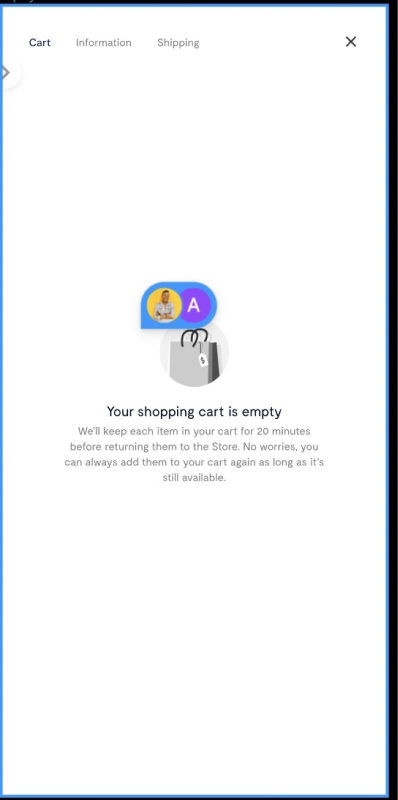
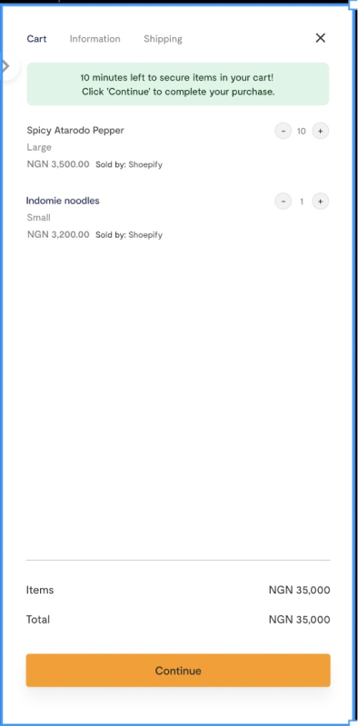

Scope
By default, Flutterwave Store places products on hold for a minimum of 30 minutes after an order is initiated. This may create an illusion of items being "out of stock" if several customers have items in their cart at the same time during peak sales periods.
Product: Flutterwave Store
Project: Setting cart duration
My Task
I was to create a banner and empty state that would enable shoppers to always know how much time we can keep items in their cart, as well as what time is remaining for an item already in a cart. So, two screens.
First screen (empty state) - when a shopper hasn’t added anything to their cart

Before now, all we did was say “Your shopping cart is empty”.
As shown in the screen above – the newly updated screen – I went further to give the shopper more context so that they know that they have an “X” number of minutes to keep an item in their cart.
The second screen (top banner) – when a shopper has items in their cart

When a shopper already has an item in their cart, I want them to see just how much time they had before an item is no longer available.